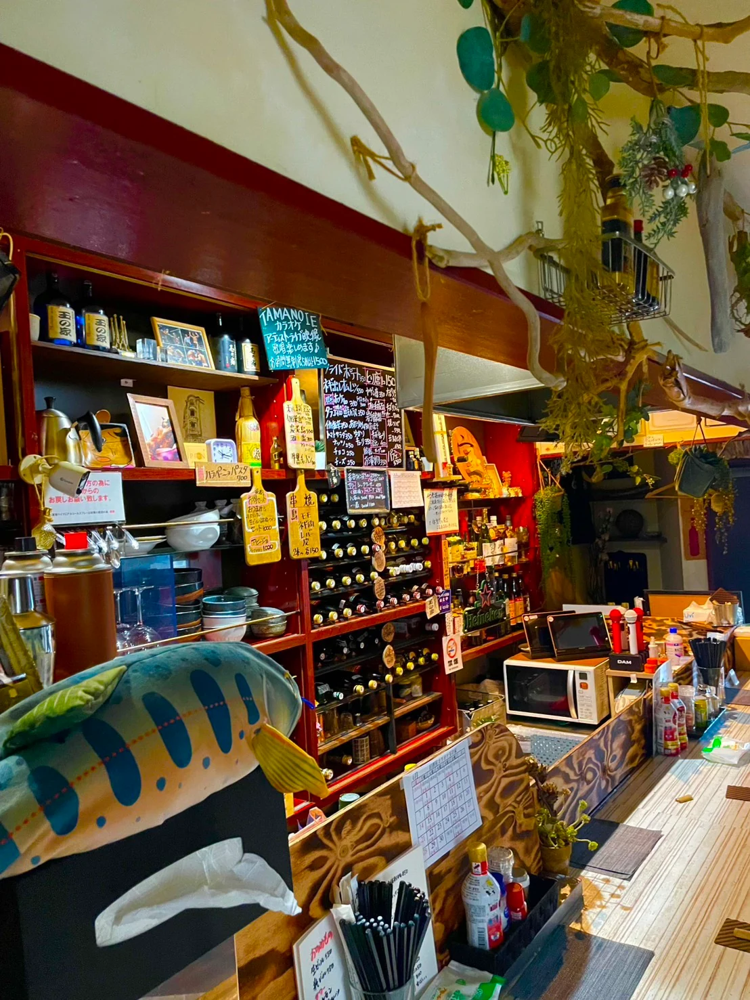
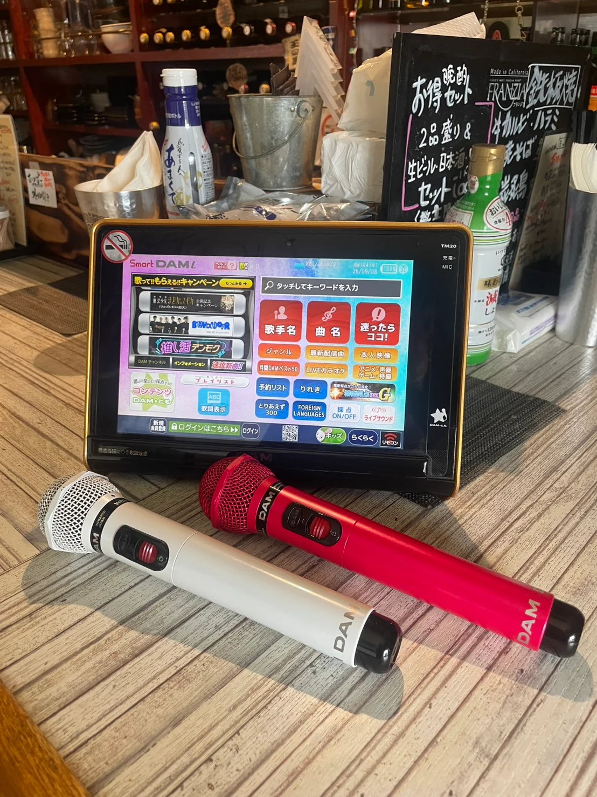
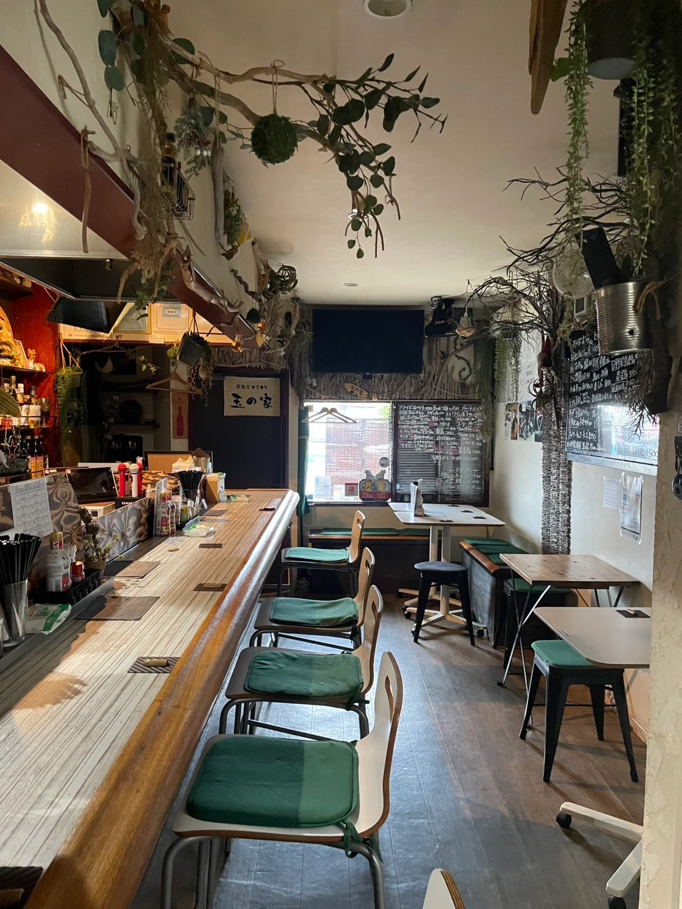

横浜・高田の、歌える居酒屋。
OPEN 17:00–24:00 月曜・木曜 定休
A GOOD SONG. A GOOD EVENING.
はじめまして、も。
いつもの、も。
誰かが歌えば、自然と拍手が生まれる。
料理を囲めば、何気ない会話がはずむ。
2018年7月24日、玉の家はオープンしました。
大切にしているのは、歌と料理と、
人と人がつながる温かな時間です。
思いきり歌いたい夜も、ゆっくり飲みたい夜も。
どうぞ、気負わずお立ち寄りください。
YOUR SONG, OUR GOOD TIME.
01 / SING TOGETHER
あなたの一曲で、
今夜がはじまる。
音響にもこだわった、気持ちよく歌えるカラオケ。
懐かしい曲も、お気に入りの曲も。
歌う人も、聴く人も、一緒になって楽しめる。
初めての方も入りやすい、温かな空気を大切にしています。
02 / EAT & DRINK
歌の合間に、
おいしい時間。
一品一品、心を込めて手作り。
お酒のお供にも、しっかり食べたい夜にも。
03 / MAKE YOURSELF AT HOME
気づけば、
いつもの居場所に。
カウンターでひとり、ゆっくり一杯。
テーブルを囲んで、友人たちと乾杯。
全16席の、顔が見える距離感。
歌って、食べて、笑って過ごす夜をどうぞ。

COUNTER & TABLE / 16 SEATSCOME ON IN
今夜、玉の家で。
お席のご予約・お問い合わせは、お電話で。
おひとりでも、みんなでも。お待ちしています。